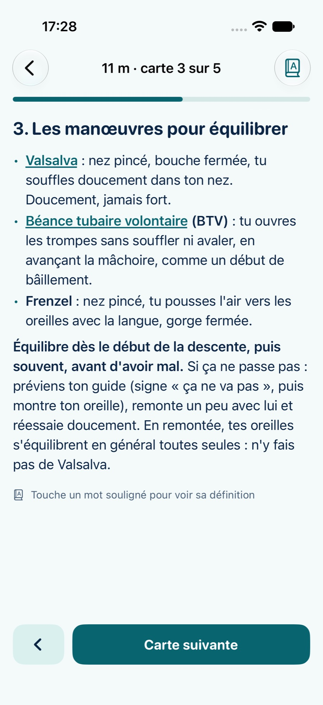
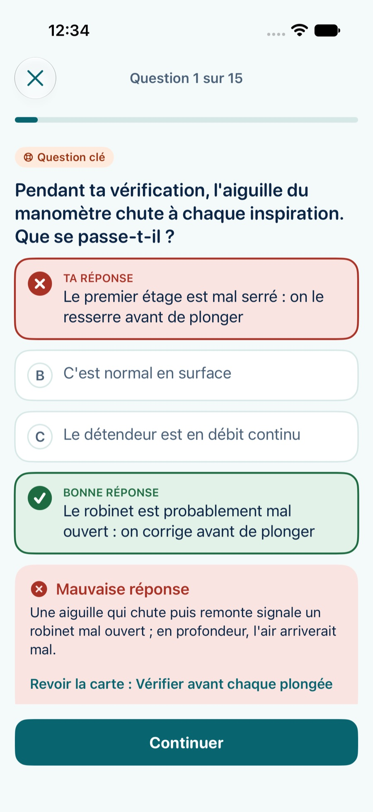
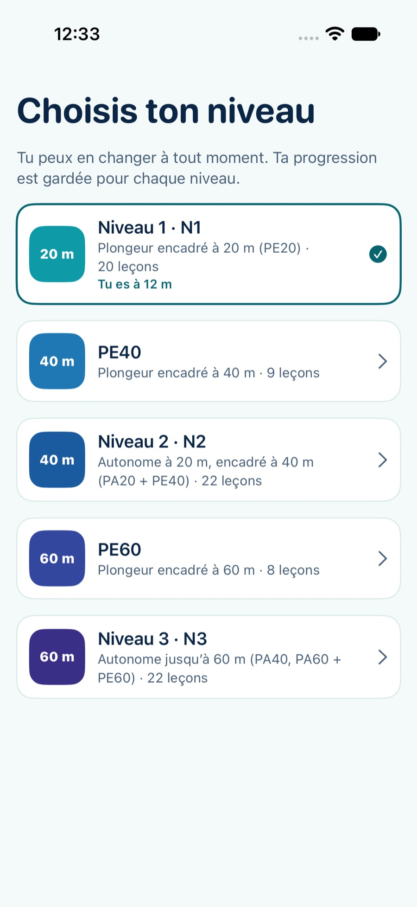
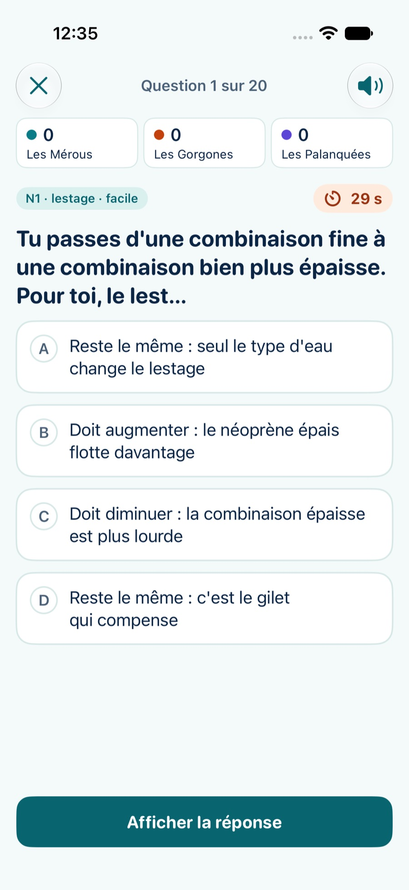

Comment fonctionne Palier
Chaque niveau est découpé en leçons de 3 à 6 minutes, suivies d’un quiz corrigé de six questions. Les questions ratées reviennent dans tes révisions du jour ; les autres reviennent de plus en plus espacées.
Des leçons courtes
Une idée clé, 4 à 6 cartes, un résumé « À retenir » et des schémas pour la pression, les oreilles et la désaturation.
Des quiz qui expliquent
La bonne réponse, pourquoi, et la carte à revoir. Les questions clés de sécurité sont repérées et reviennent plus souvent.
Ta progression
Une jauge qui descend d’un cran à chaque leçon validée, une série de jours, des badges dans ton carnet de plongée.
Du Niveau 1 au Niveau 3
Le contenu suit les manuels de formation technique (Niveau 1 de décembre 2025, Niveau 2 de mai 2026, Niveau 3 de décembre 2025) et le Code du sport en vigueur. Il est rédigé pour l’app ; sa relecture par un moniteur est en cours.



Le Méga Quiz, pour les soirées club Palier Pro
300 questions du N1 au N3, plus de la culture plongée et du milieu. De 1 à 4 équipes, 10, 20 ou 30 questions, minuteur de 30 s en option. Affiche la question sur la télé du club, révèle la réponse et coche les équipes qui ont trouvé ; l’app tient les scores et affiche le classement. Inclus dans Palier Pro.

Questions fréquentes
Palier est-elle une application officielle de la FFESSM ?
Non. Palier est une application indépendante, ni éditée ni validée par la FFESSM. Son contenu suit les manuels de formation de la fédération et le Code du sport ; sa relecture par un moniteur est en cours. Elle ne remplace ni ton moniteur ni la pratique dans l’eau.
Y a-t-il un examen écrit au Niveau 1 ?
Non : au Niveau 1, le moniteur valide les compétences dans l’eau et vérifie la théorie à l’oral. L’examen blanc de Palier sert à savoir où tu en es.
Faut-il créer un compte ?
Non. Ta progression reste sur ton iPhone, sans compte ni serveur.
Palier est-elle gratuite ?
Oui : leçons, quiz, révisions et examen blanc sont gratuits, avec un bandeau publicitaire qui n’apparaît jamais pendant une question. Palier Pro (4,99 €, achat unique) ajoute le Méga Quiz et retire toute publicité.
Et sur Android ?
La version iPhone sort d’abord. Une version Android est prévue ensuite.